Screen Zine is the result of a one-hour workshop conducted online for the Brooklyn Art Book Fair on Saturday, June 27, 2020 at 2:00PM. The workshop opened with 1-minute attunement exercises, as an experiment to gather and presence everyone into a digital screen-based space (Zoom).
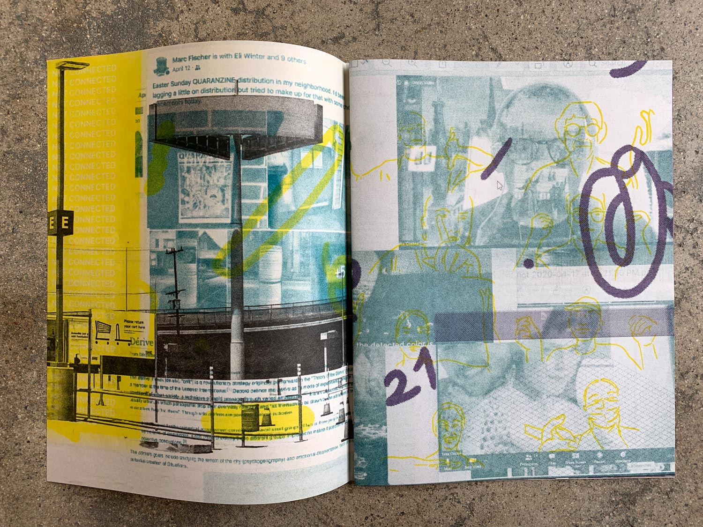
The 20 participants spent 20 minutes composing images and messages on their desktops. Language from Urgency Reader 2 was provided for possible inspiration. Participants shared their screens and the desktops were captured as images. Those images were then mixed and composed into 3-color risograph prints, and assembled into an edition of 30 zines. Each participant received a copy of the zine in the mail.
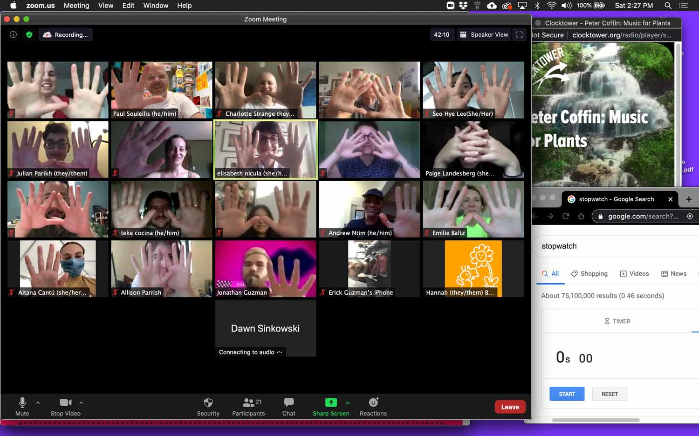
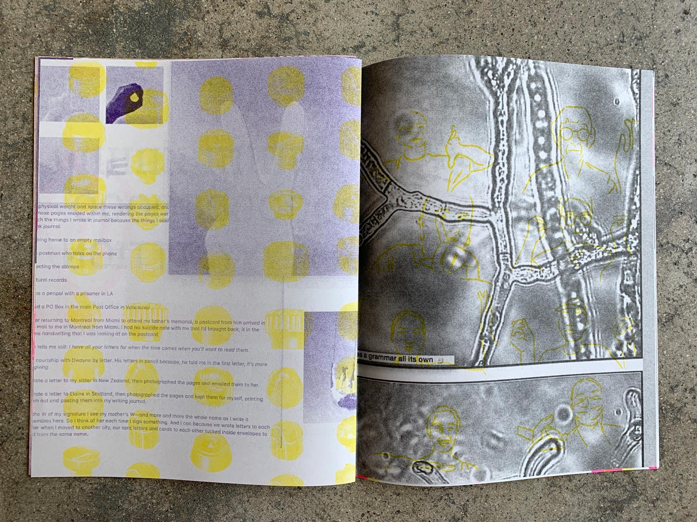 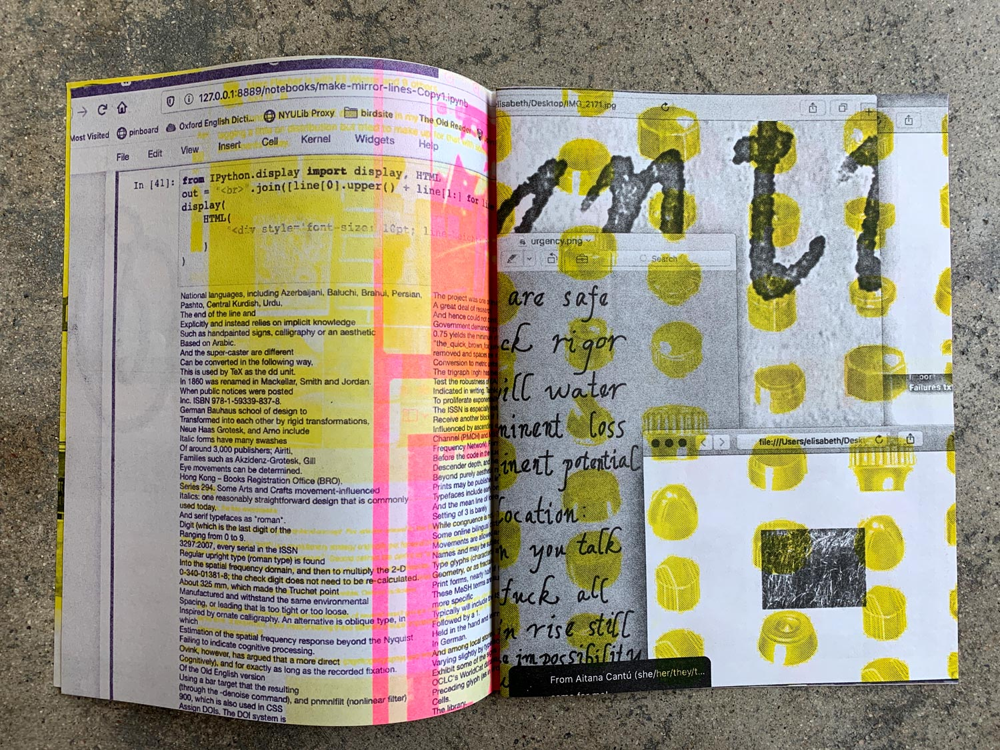
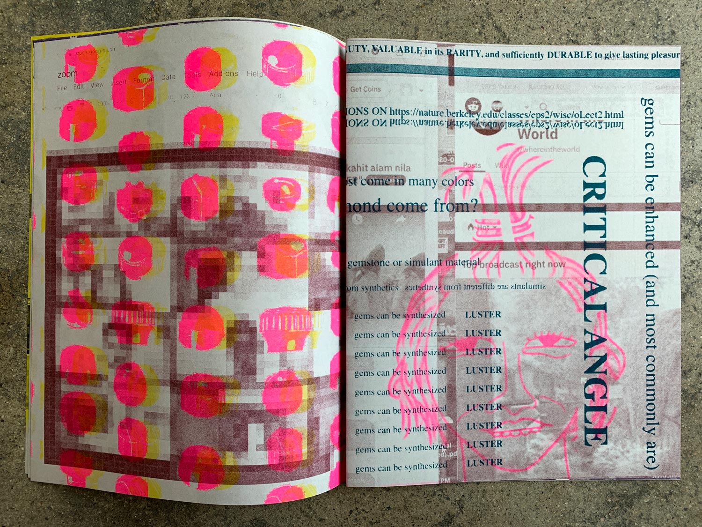 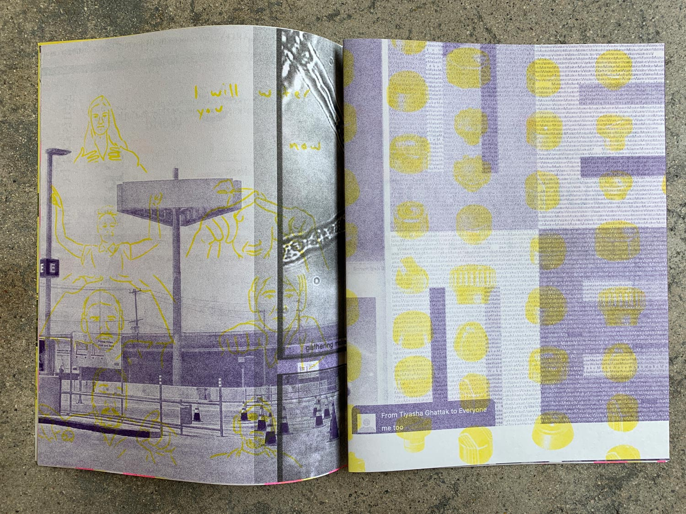
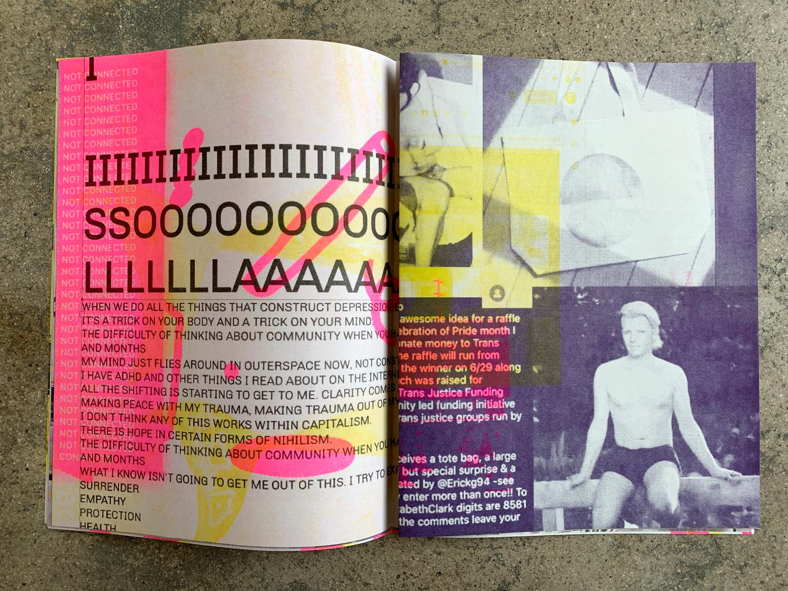 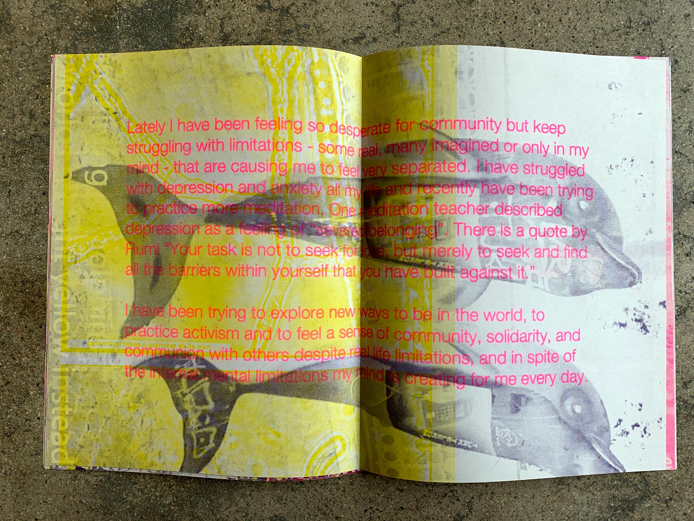
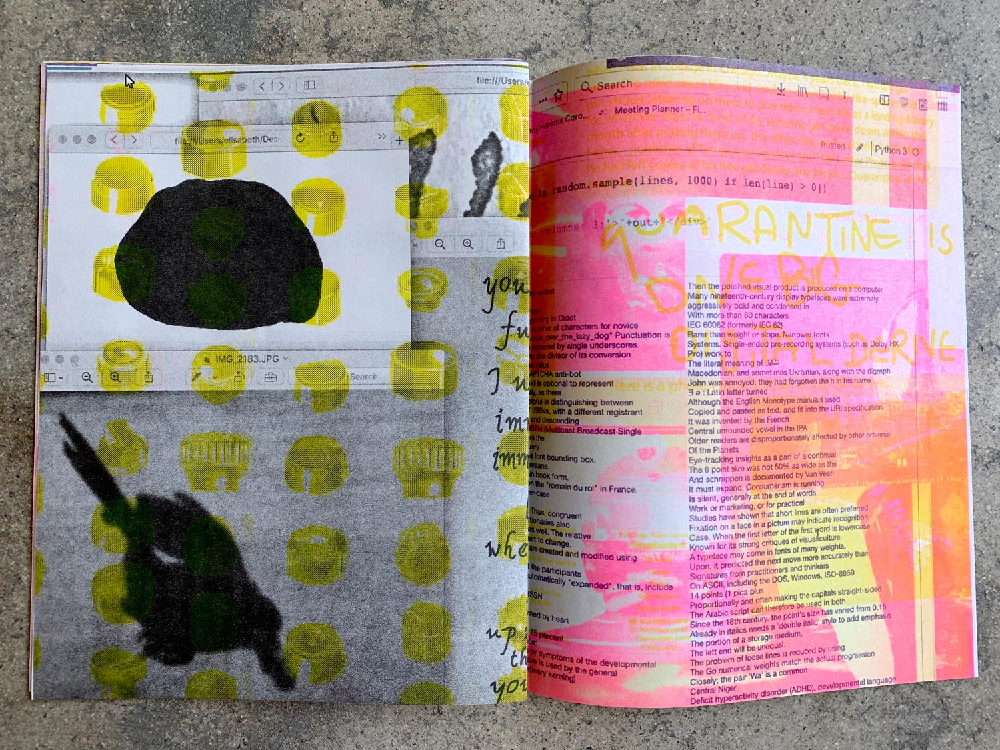 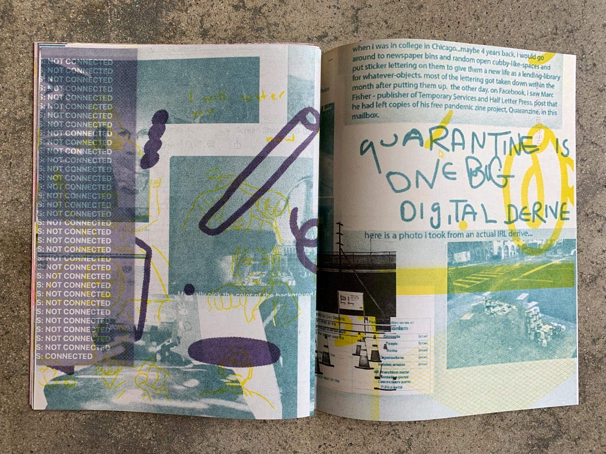
SCREEN ZINE Zine 8.25 in. x 10.75 in.
28 pages + 1 sheet (cover wrap)
Edition of 30
Risograph printed at Queer.Archive.Work Providence, RI
August 2020
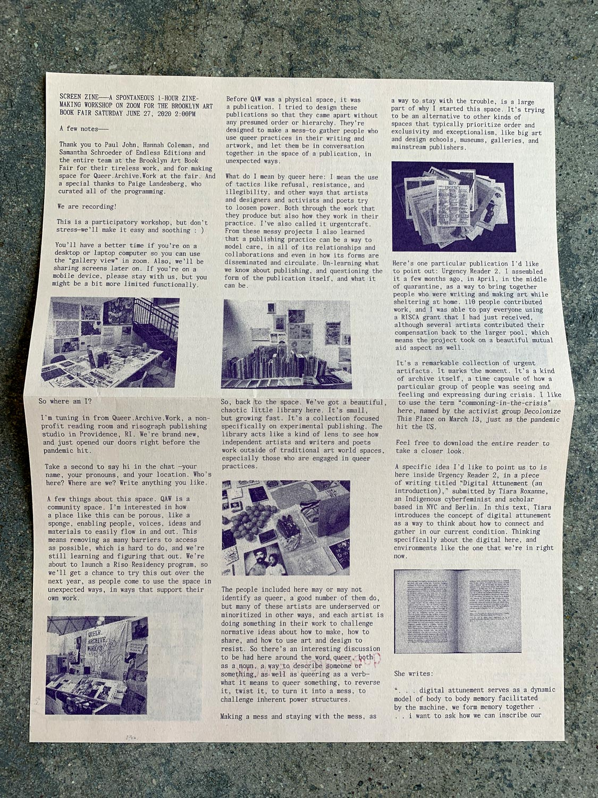 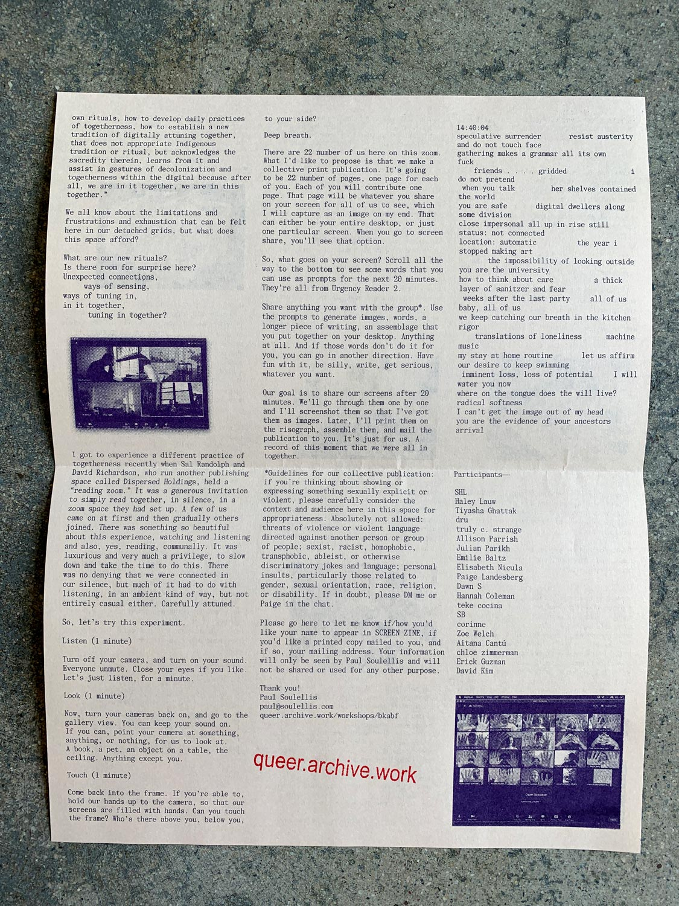
Contributors: SHL, Haley Lauw, Tiyasha Ghattak, dru, truly c. strange, Allison Parrish, Julian Parikh, Emilie Baltz, Elisabeth Nicula, Zoe Welch, Paige Landesberg, Dawn S, Hannah Coleman, teke cocina, SB, corinne, Aitana Cantú, chloe zimmerman, Erick Guzman, David Kim